In patients with bipolar disorders or schizophrenia,
Learn how identification and intervention can help keep the situation cool. Help patients regain control safely, using a cooperative approach.1,2
In patients with bipolar disorders or schizophrenia,
Learn how identification and intervention can help keep the situation cool. Help patients regain control safely, using a cooperative approach.1,2

Sign up for the latest evidence, information, and resources on de-escalation and intervention approaches.
References:
1. Richmond JS, Berlin JS, Fishkind AB, et al. Verbal de-escalation of the agitated patient: consensus statement of the American Association for Emergency Psychiatry Project BETA De-escalation Workgroup. West J Emerg Med. 2012;13(1):17-25. doi:10.5811/westjem.2011.9.6864 2. Martinez-Raga J, Amore M, Di Sciascio G, et al. 1st international experts’ meeting on agitation: conclusions regarding the current and ideal management paradigm of agitation. Front Psychiatry. 2018;9:54. doi:10.3389/fpsyt.2018.00054